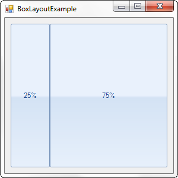
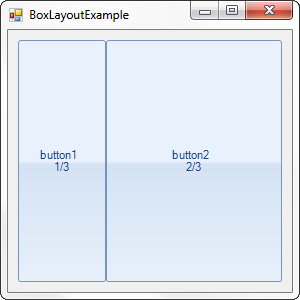
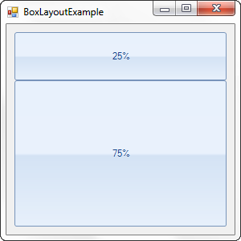
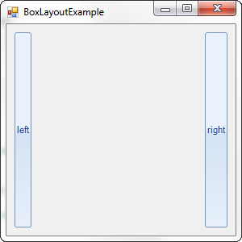
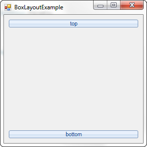

BoxLayout
BoxLayout is a panel that arranges its items according to three predefined settings:
Proportion, Orientation and StripPosition.
Methods and properties:
SetProportion(RadElement element, float proportion) - is a static
method that sets the proportion of the total area each element will cover.Orientation - is a property that indicates whether
the panel should stack its items horizontally (from left to right) or vertically (from top to bottom).StripPosition - is a static property that specifies whether
each element will be treated as first or last child. When the Orientation is horizontal,
a child with StripPosition First will be positioned to the most left, while a child with
StripPosition Last will be positioned to the most right. Respectively, when the Orientation
is vertical, the First child is positioned at the top, while the Last child appears at the bottom.
Here is how to create a element with BoxLayout and set the Proportion
[C#] Creating box layout panel element
public class MyBoxLayoutPanelElement : RadElement
{
protected override void CreateChildElements()
{
BoxLayout boxPanel = new BoxLayout();
RadButtonElement button1 = new RadButtonElement("25%");
BoxLayout.SetProportion(button1, 1f);
RadButtonElement button2 = new RadButtonElement("75%");
BoxLayout.SetProportion(button2, 3f);
boxPanel.Children.Add(button1);
boxPanel.Children.Add(button2);
this.Children.Add(boxPanel);
base.CreateChildElements();
}
[VB.NET] Creating box layout panel element
Public Class MyBoxLayoutPanelElement
Inherits RadElement
Protected Overrides Sub CreateChildElements()
Dim boxPanel As New BoxLayout()
Dim button1 As New RadButtonElement("25%")
BoxLayout.SetProportion(button1, 1.0F)
Dim button2 As New RadButtonElement("75%")
BoxLayout.SetProportion(button2, 3.0F)
boxPanel.Children.Add(button1)
boxPanel.Children.Add(button2)
Me.Children.Add(boxPanel)
MyBase.CreateChildElements()
End Sub
And here is how to embed this element in a class
[C#] Using the element in a control
public class MyBoxLayoutPanelControl : RadControl
{
protected override void CreateChildItems(RadElement parent)
{
base.CreateChildItems(parent);
parent.Children.Add(new MyBoxLayoutPanelElement());
}
}
[VB.NET] Using the element in a control
Class MyBoxLayoutPanelControl
Inherits RadControl
Protected Overrides Sub CreateChildItems(parent As RadElement)
MyBase.CreateChildItems(parent)
parent.Children.Add(New MyBoxLayoutPanelElement())
End Sub
End Class

Because the proportion of button1 and button2 is 1:3, button1 covers exactly one quarter of the panel and button2
fills the remaining three quarters. Changing the proportion to 1:2 will make the two buttons become one third and two thirds respectively:

To arrange the elements in the panel vertically set the Orientation of the BoxLayout to Vertical:
[C#] Set orientation
boxPanel.Orientation = Orientation.Vertical;
[VB.NET] Set orientation
boxPanel.Orientation = Orientation.Vertical

The StripPosition property allows the BoxLayout to treat each element as
First or Last. Children with StripPosition
set to First are always positioned to the left when the Orientation
is horizontal and the top when the Orientation is vertical. Children with StripPosition
set to Last are always located to the right, when the Orientation is horizontal and
to the bottom when the Orientation is vertical.
For example, two if RadButtonElements, one First and the other
Last, are added to a BoxLayout, the result will be the following:
[C#] Set position
BoxLayout boxPanel = new BoxLayout();
RadButtonElement button1 = new RadButtonElement("left");
button1.StretchHorizontally = false;
button1.SetValue(BoxLayout.StripPositionProperty, BoxLayout.StripPosition.First);
button1.Size = new System.Drawing.Size(20, 20);
RadButtonElement button2 = new RadButtonElement("right");
button2.SetValue(BoxLayout.StripPositionProperty, BoxLayout.StripPosition.Last);
button2.StretchHorizontally = false;
button2.Size = new System.Drawing.Size(20, 20);
boxPanel.Orientation = Orientation.Horizontal;
boxPanel.Children.Add(button1);
boxPanel.Children.Add(button2);
[VB.NET] Set position
Dim boxPanel As New BoxLayout()
Dim button1 As New RadButtonElement("left")
button1.StretchHorizontally = False
button1.SetValue(BoxLayout.StripPositionProperty, BoxLayout.StripPosition.First)
button1.Size = New System.Drawing.Size(20, 20)
Dim button2 As New RadButtonElement("right")
button2.SetValue(BoxLayout.StripPositionProperty, BoxLayout.StripPosition.Last)
button2.StretchHorizontally = False
button2.Size = New System.Drawing.Size(20, 20)
boxPanel.Orientation = Orientation.Horizontal
boxPanel.Children.Add(button1)
boxPanel.Children.Add(button2)

When the Orientation is vertical the elements will be positioned in the following manner:
